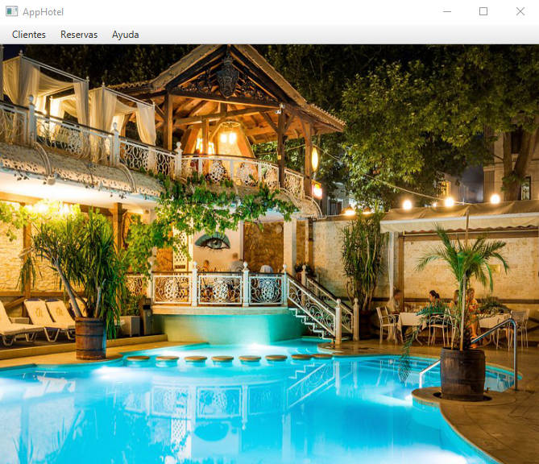
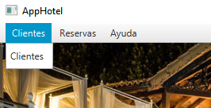
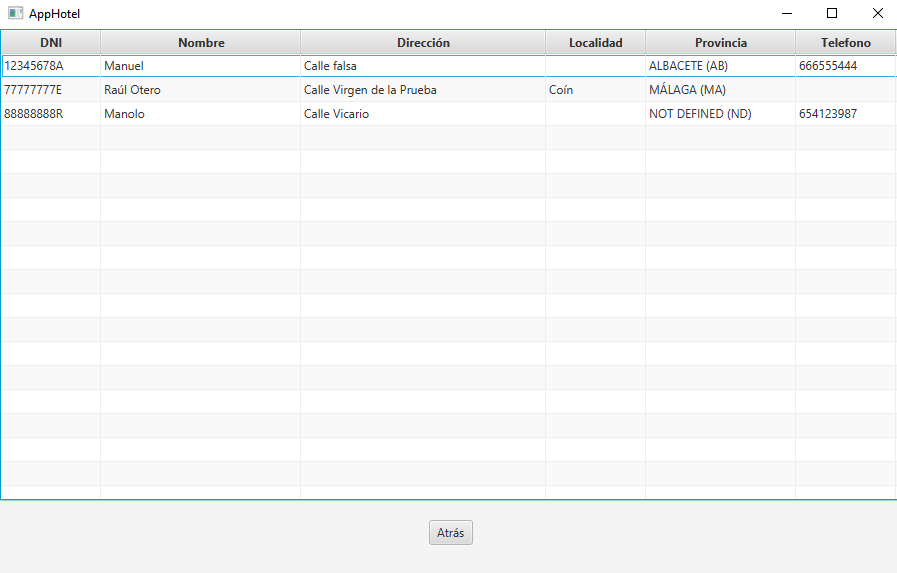
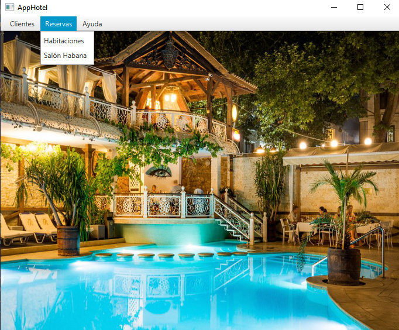
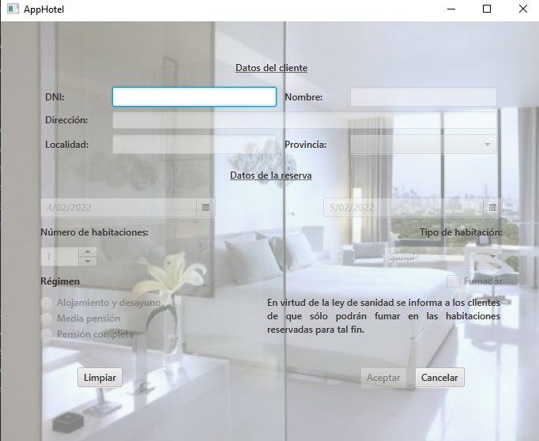
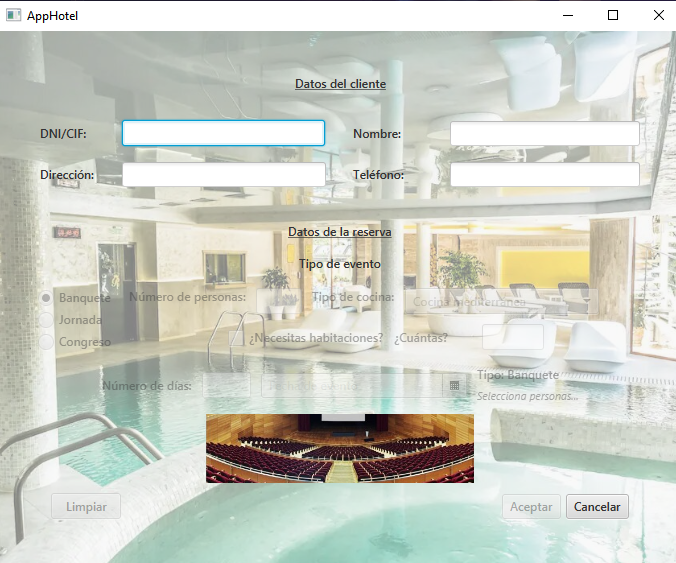
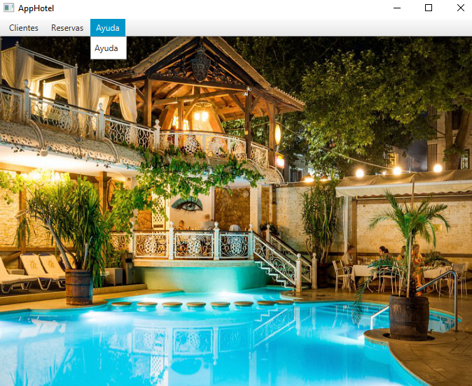
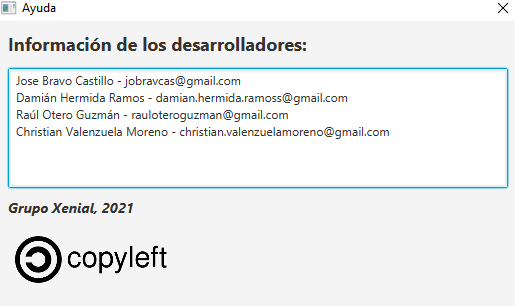

Página principal
Como vemos al iniciar la aplicación tenemos 3 pestañas las cuales nos van a dar distintas funcionalidades.

En primera instancia nos encontramos con la 'Clientes' la cual despliega una opción también llamada clientes que nos da la posibilidad de mostrarnos los registros introducidos en la base de datos al realizar las distintas reservas.

Al seleccionar la opción de clientes se nos abrirá dicha instancia:

Podemos comprobar que nos aparecen los clientes los cuales se han dado de alta en nuestra aplicación y si presionamos en el botón 'Atrás'.
La pestaña 'Reservas' nos desplegara varias opciones:

Habitaciones → La cual nos redirigirá a la zona donde podremos realizar una reserva de habitación.
Si requiere de una explicación de la funcionalidad de esta ventana le recomiendo acceder a este enlace:

Salón → la cual nos redirigirá a la zona donde podremos realizar una reserva de salón.
Si requiere de una explicación de la funcionalidad de esta ventana le recomiendo acceder a este enlace:

Por ultimo nos encontramos la pestaña de 'Ayuda' la cual mostrará el contacto de nosotros, los creadores:

